CPTL API - Catalog
We now describe the components from which CPTL is constructed. Each of these constructs consists of classes and relations described within our CPTL ontology (to be released). In this release, we focus on the following CPTL namespaces:
cptl:power
This is a very basic set of primitives to construct power grids. We now show the current model for each of our primitives.
- cptl:power:Line
- cptl:power:Node
- cptl:power:Breaker
- cptl:power:BreakerInstallation
- cptl:power:BreakerControl
- cptl:power:BreakerControlInstallation
- cptl:power:CurrentTransformer
- cptl:power:PotentialTransformer
- cptl:power:RTUToBreakerInstallation
- cptl:power:RTUBreakerControlInstallation
Line
Currently, this may either be a single or three-phase line.
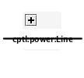
High-level view of a Line.
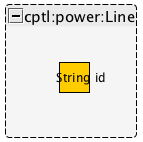
More detailed view of the Line data model.
Node
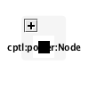
High-level view of a Node.
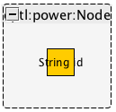
More detailed view of the Node data model.
Breaker
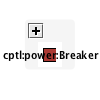
High-level view of a Breaker.

More detailed view of the Breaker data model.
Breaker Installation
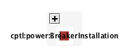
High-level view of a Breaker installation.
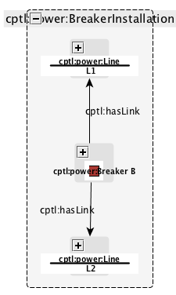
More detailed view of the Breaker installation data model.
Breaker Control
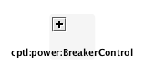
High-level view of a Breaker Control.
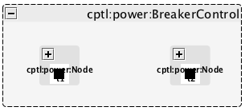
More detailed view of the Breaker Control data model.
BreakerControlInstallation

High-level view of a Breaker Control Installation.

More detailed view of the Breaker Control Installation data model.
Current Transformer
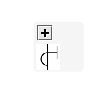
High-level view of a Current Transformer.
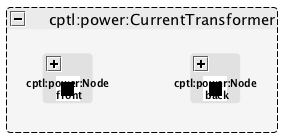
More detailed view of the Current Transformer data model.
Potential Transformer
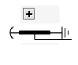
High-level view of a Potential Transformer.
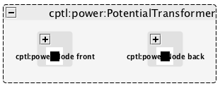
More detailed view of the Potential Transformer data model.
RTU To Breaker

High-level view of an RTU to Breaker installation.

More detailed view of the RTU to Breaker installation.
Breaker Control to Breaker
High-level view of a Breaker Control installation.
More detailed view of a Breaker Control installation.
RTU to Breaker Control to Breaker

High-level view of a Breaker Control with RTU connected.

More detailed view of a Breaker Control with RTU connected.
cptl:substation
This is a very basic set of primitives to describe substation networks. We now show the current model for each of our primitives.
RTU
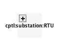
High-level view of a RTU.
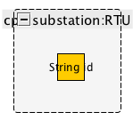
More detailed view of the RTU data model.
Page last modified: March 19, 2014
CPTL: always work in progress packaged on March 19, 2014. Edited by and copyright 2013-2014 Gabriel A. Weaver except where otherwise noted.

CPTL Power Documentation is licensed under a Creative Commons Attribution-NonCommercial-ShareAlike 4.0 International License (With that said, we are amenable to commercialization).
This site includes material that has not been reviewed or approved by anyone at University of Illinois at Urbana-Champaign.